Sequential decision-making
Contents
Sequential decision-making#
In the previous chapters (specifically, the CBF-CLF filters), we saw that a control input could be synthesized by adjusting the desired control as little as possible to satisfy the CBF and CLF constraints. But how was the desired control selected? And since we change the desired control for the current time, how does this effect the future behavior of the system? Would adjusting the desired control now affect the performance of the system in the future?
To answer these questions, we must consider a sequence of decisions (i.e., control inputs or actions) and reason about how each decision may have enduring consequences.
Some motivating examples#
Going through college: What are the consequences of (a) sleeping in and skipping lecture versus (b) waking up early and attending lecture? In option (a), the immediate reward is high/cost is low since you get to sleep in and relax, but in the future, you may be ill-prepared for the midterm and that requires you to spend more effort to revise for the midterm. So your future reward is low/cost is high. With option (b), your immediate reward is low/cost is high since you have to wake up early and spend effort paying attention in class, but you will be more prepared for the upcoming midterm and will not need to spend too much effort in revising for the midterm. So your future reward is high/cost is low. So which option should you take? Well, that depends on the how much the immediate reward/cost compares with the future reward/cost.
We can extend this example, and consider the your decisions when taking a pre-requisite course (e.g., linear algebra) and how that may effect your performance in a future engineering course, which then may affect your competitiveness when applying for jobs or graduate programs, and so forth.
Playing chess: In the game of chess, your moves early in the game affect how your pieces are distributed across the board, and therefore will affect what moves you can make in the future, and ultimately, your ability to win the game. This is a rather challenging sequential decision-making problem because (i) there are many possible moves to make at any turn and many possible board configurations to consider, (ii) there is another player (the opponent) involved and they make moves that we have no control over, (iii) the game is (typically) a long one, involving many moves before a winner is determined, and the payoff of a move right now may not be immediate, but may not come until many moves later.
Healthcare: Suppose you want to treat a patient with a chronic condition. You can offer some treatment options which incur low risk, but which require some amount of effort or time/money cost for the patient, like regular exercise and monthly gym membership, regular therapy sessions that they need to drive to, or eating healthy food which costs more money to buy and time to make. Or, you could offer medium-risk treatment options such as taking a prescription drug that has some potential side effects, or you could offer high-risk surgery which is expensive, time-consuming, and has potential serious side effects. Then the question is: which treatment option should you offer over time as the patient’s condition evolves over time?
These motivating examples involve the need to make a sequence of decisions where each decision will have a consequence—one that will be experienced immediately, and another which will be experienced in the future which will depend on the decision taken right now. Deciding which decision to make ultimately depends on how much you care about the consequences now versus the consequences in the future. This is generally a very difficult choice to make for many reasons, but in particular, it is because (i) knowing exactly what the future consequences are is very challenging because there could be so many external influences that could affect it (i.e., stochasticity in the dynamics and disturbances), (ii) there could be many possible situations that arise and it is difficult to consider all the possible cases (i.e., large state space), and (iii) it is difficult to know the true cost/reward of a decision (e.g., how to do you measure the reward of sleeping in versus waking up on time to attend class?).
In the rest of the chapter, we will discuss a principled approach to solving these sequential decision-making problems, and how one may go about solving these problems.
Principle of Optimality#
The Principle of Optimality is a foundational concept in sequential decision-making and dynamic programming. There are many ways to describe it, here are some different versions of the same concept:
An optimal solution to a problem contains within it optimal solutions to its subproblems.
Given an optimal policy, any tail portion of that policy is also optimal for that sub-problem.
If you’re following an optimal control policy, then no matter what state you’re in along the optimal trajectory, the remaining path must also follow the optimal policy from that state onward.
This principle suggests that if a problem is being solved optimally, then regardless of the decisions made in the past, the decisions that follow must also be optimal for the current state. This recursive nature enables us to decompose complex sequential decision-making problems into smaller, more manageable subproblems. By leveraging the principle of optimality, we can systematically compute the best sequence of decisions by solving these subproblems, often using techniques like dynamic programming. By iteratively solving for the tail subproblems, we can then contruct the optimal policy—the optimal control to take from any state.
Problem set-up: Optimal Control Problem#
First, let us mathematically define the optimal control problem we seek to solve. To start off, let us consider a discrete time and finite-horizon setting. The idea for continuous time is similar, but the resulting key equation we get at the end will be a partial differential equation instead of a difference equation.
Let \(x_t, u_t\) denote the state and control at time step \(t\). Suppose we seek to find an optimal sequence of controls that minimizes the total cost over a time horizon \(T\).
What we have set up above is an optimal control problem. In addition to dynamics, initial state constraints, and control and state constraints, there could potentially be other constraints depending on the problem, like obstacle constraints, or something more complex like state-triggered constraints, or spatio-temporal constraints.
We have made an assumption here that the cost has an additive cost structure, where the total cost is sum of the cost for being at a state \(x\) and executing a control \(u\) at timestep \(t\). This additive cost structure is important as this allows us to break down the problem into smaller subproblems. Also note that we have a terminal cost \(J_T\) which denotes the cost of being at state \(x_T\) at the end of the planning horizon.
The Value Function (i.e., cost-to-go)#
As the Principle of Optimality states, we can break down the search for an optimal policy into smaller tail subproblems. Given this, we define the concept of a value function \(V_\pi(x,t)\), which is a function that describes the future accumulated cost/reward starting at state \(x\) at time \(t\) and following a policy \(\pi\). Recall, a policy is a function that maps state \(x\) to a control \(u\), \(u=\pi(x)\). Mathematically, the value function is defined as (for discrete time and finite horizon),
Simply put, we just sum up the total cost from following a policy \(\pi\) from state \(x\), starting at timestep \(t\). The value function is interpreted as, and often referred to as, the cost-to-go as it quite literally represents the total future cost from state \(x\).
Naturally, depending on the choice of \(\pi\), your value would be different. So how do we go about picking the optimal policy \(\pi^*\)?
Optimal value function and policy#
To find the optimal policy \(\pi^*\) (and corresponding optimal value function \(V^*\)), we simply need to find the policy that minimizes the total cost.
To simplify the problem a little bit for ease of notation, let’s remove the constraints for now (except for dynamics constraints).
Even with the constraints removed, while it may become more tractable to solve each individual optimization problem, we would still need to solve this optimization problem for every state in our state space and for all time steps. Hopefully you can see that this will become intractable very quickly, especially for large state spaces and long horizons. Even if it is a relatively small problem and we could enumerate over all possible state, control, and timesteps, it would involve a lot of repeated and wasted computations. This is where the principle of optimality helps!
Bellman equation#
Using the principle of optimality, we can break up the defintion of the value function (9) into two parts as follows (again, removing the constraints to make it more notationally simple)
We have simply separated out the first term of the summation. But note that the remaining summation term is simply \(V^*(x_{t+1}, t+1)\), the value function at the next state and next time step! Now, we can rewrite it as,
So now this optimization problem looks relatively easy to compute! Out of all the possible controls, pick the one that minimizes the sum of the immediate cost \(J(x_t, u_t, t)\) plus the value at the next state \(V^*(x_{t+1}, t+1)\). Okay! But first we need to know \(V^*(x_{t+1}, t+1)\). Well that just looks like the original problem we had, but the time step has progressed by one. So we can repeat what we have above for for \(t+1\). But then we will have the same problem again for \(t+2\), and so forth.
Then we notice that at the end of horizon at timestep \(T\), the value at being at state \(x_T\) is given by \(J_T(x_T)\). As such, we have a terminal condition, \(V^*(x_{T}, T)=J_T(x_T)\). Basically, what we have described just now is dynamic programming! and the base case is at timestep \(T\) with \(V^*(x_{T}, T)=J_T(x_T)\). With the base case defined, we can then sweep through the timestep, working backward in time, \(T, T-1,...,2,1,0\).
The Bellman equation essentially describes this recursion,
Bellman Equation (discrete time, finite horizon)
Pause and think
Although the Bellman equation provides a nice recursive relationship to use, is it straightforward to compute the value function for a general setting, say with nonlinear dynamics, non-trivial constraints, and nonlinear cost terms?
Representing the value function#
Depending on the nature of the state and control space, the value function can be represented differently.
Discrete (finite) state: The value function can be stored in tabular form, with an index for state, and another for time. But if the state space and horizon is very large (e.g., game of chess) then this look-up table would be too large, and in that case, a function approximation (e.g., deep neural network) would be used.
Continuous state: A function approximation (e.g., deep neural network) would typically be used. But for some very simple settings (e.g., Linear Quadratic Regular), the value function is quadratic.
The same can be said for storing the policy.
Another note to mention. We have thus far defined a state-value function where the value is determined purely by the state and timestep. However, another common term is the state-action-value or Q-function which is also used (often in reinforcement learning literature) which considers the action (i.e., control) as an input:
Example: discrete-time, deterministic dynamics, discrete state and control.
Suppose we wish to find the lowest-cost path through the graph shown below. Each node represents a state of some system, and each edge represents an action we can take in a given state to transition to another state. Each edge is labeled with the cost of traversing it (i.e., taking that action), and the final node F is labeled with the known terminal state cost of ending up at that node (in this case, 3). Note then that for this terminal state, the value function \(V\) is equal to three; at first, this is the only state for which we know \(V\).
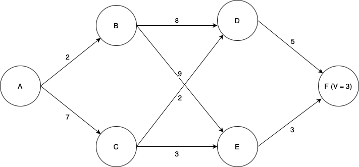
We will use dynamic programming to find the optimal path. First, we must find \(V\) for each of the states D and E. Since each of these states has only one possible action we can take, this is easy; the value function for each state is equal to the cost of the (one) action we can take in that state, plus the value of the state we end up at (F). Now we can label the graph with the known values of \(V\) at states D and E, as well as highlight the optimal actions to take in states D and E (although there is only one action from each of those states in this case).
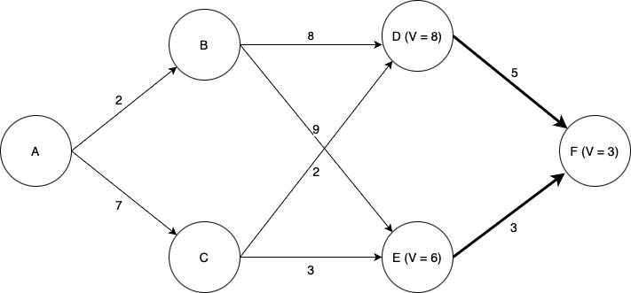
Now things become more interesting. We now need to determine the optimal action and value of \(V\) for each of states B and C. Now we have choices; for example, from state B, we could choose to go to either state D or state E. Which one is best? Again we use the Bellman equation. Let’s look at state B. If we choose to go to state D, we will incur a cost of \(8 + V(D) = 8 + 8 = 16\). If we choose to go to state E we will incur a cost of \(9 + V(E) = 9 + 6 = 15\). Thus we see that the lowest-cost option is to go to state E, and by choosing that action we have \(V = 15\) for state B.
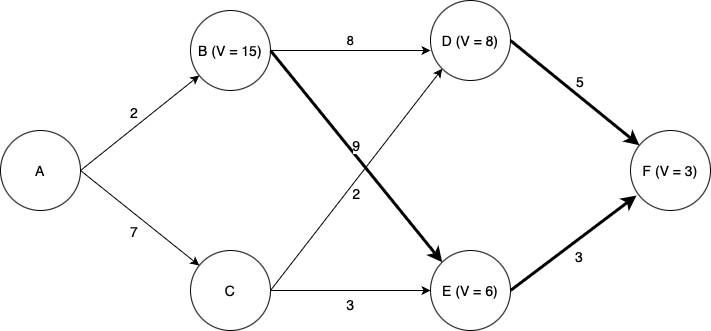
Turning our attention to state C: if we choose to go to state D, we incur a cost of \(2 + V(D) = 2 + 8 = 10\), and if we choose to go to state E we incur a cost of \(3 + V(E) = 3 + 6 = 9\). Thus going to E is the optimal choice, and doing so we have \(V =9\) for state B.
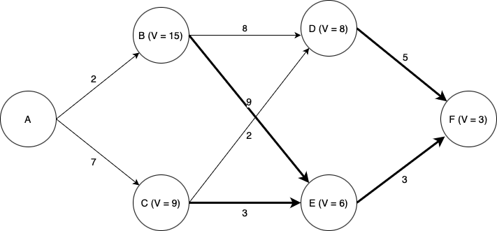
Finally, looking at state A, we see that if we go to state B, we incur a cost of \(2 + V(B) = 2 + 15 = 17\), and if we go to state C we incur a cost of \(7 + V(C) = 7 + 9 = 15\). Thus C is the optimal choice, and \(V = 15\) for state A.
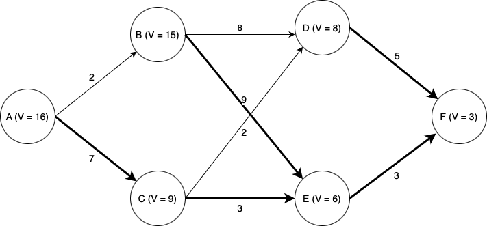
Thus we have computed the optimal path from state A (or from any state onward) to state F.
Note that the computational effort involved scales linearly with the time horizon; considering a time horizon twice as long would only incur twice as much computational effort. A brute-force approach in which we simply enumerate every possible path through the state space and pick the best one would scale exponentially in the time horizon; a time horizon twice as long would square the computation time.
Stochastic dynamic programming#
In many cases, we do not know precisely which state we will end up in when we take a certain action. That is, given \(x_t, u_t\), the next state \(x_{t+1}\) is not deterministic. For example, if we are controlling a rocket, in the real world the thrust produced by the engine for any given throttle command is not precesely known; thus we cannot precisely tell what the vehicle’s state will be some time in the future. Or, suppose we are playing a game of chess; even if we know the state (i.e., the board position) perfectly, when we make a move we don’t know what the opponent will do. We may have an idea of which moves are likely or unlikely based on our knowledge of the game and our opponent, and in fact the skill of playing chess is to try to influence your opponent to make moves favorable to you, but we ultimately don’t know the future perfectly.
In cases like these we must use methods which can handle the inherent stochasticity of the system. One common approach is to use dynamic programming to maximize not the value function \(V(x,t)\), but the expected value of the value function, \(\mathbb{E}[V(x,t)]\).
Additionally, the cost function may depend not only on state and control, but also may depend on next state. Since there is uncertainty on the next state, there cost is also uncertain.
Adapting the previous notation slightly to account for stochasticity in the problem:
Instead of dynamics \(x_{t+1} = f(x_t, u_t, t)\), we consider state transition probabilities where \(x_{t+1} \sim p(x_{t+1} \mid x_t, u_t)\).
Instead of a cost \(J(x_t, u_t, t)\), we consider \(J(x_t, u_t, x_{t+1}, t)\).
Stochastic Bellman Equation (discrete time, finite horizon)
Example: discrete-time, stochastic dynamics, discrete state and control.
Suppose we wish to find the lowest-cost path through the graph shown below. Each node represents a state of some system, and each edge represents a possible transition between states. Note that in the stocastic case, state transitions do not correspond directly to actions. In this example, we assume that in each state, there are two actions we can take: “Action 1” and “Action 2”. Each transition edge is labeled with two numbers; the first is the probability of that state transition occuring if we take Action 1, and the second is the probability of that state transition occuring if we take Action 2. The value of ending up in either of the two final states is marked in the graph. Taking Action 1 costs 1 unit of value, and taking Action 2 costs 2 units of value. We seek to find a sequence of actions that maximizes the expected total value of the path.
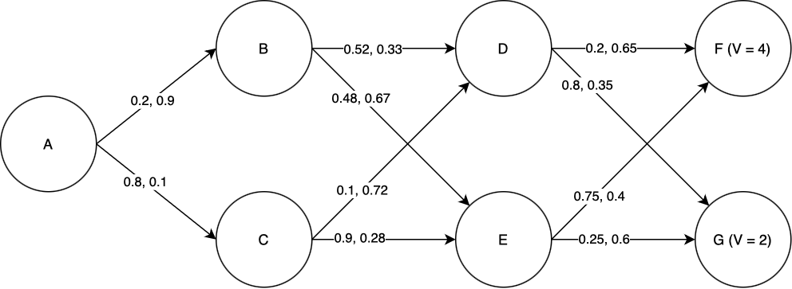
We will use dynamic programming to find the optimal path. First, we must find \(V\) for each of the states D and E. Starting with state D: the expected total value if we take Action 1 is \(0.2\times V(F) + 0.8\times V(G) - 1 = 0.2\times4 + 0.8\times 2 - 1 = 1.4\). The expected total value if we take Action 2 is \(0.65\times V(F) + 0.35\times V(G) - 2 = 0.65\times 4 + 0.35\times 2 - 2 = 1.3\). Of these, 1.4 is greater, and so the optimal action to take in state D is Action 1, and \(V(D) = 1.4\). Performing the same process for state E, we find that the optimal action is again Action 1, and \(V(E) = 2.5\).
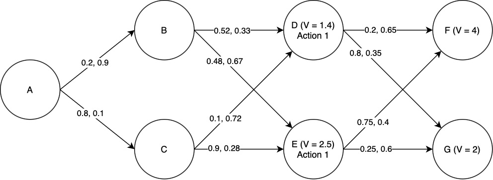
Now we proceed to states B and C. For state B: if we take Action 1, the expected total value is \(0.52\times V(D) + 0.48\times V(E) - 1 = 0.52\times 1.4 + 0.48\times 2.5 - 1 = 0.928\). If we take Action 2, the expected total value is \(0.33\times V(D) + 0.67\times V(E) - 2 = 0.33\times 1.4 + 0.67\times 2.5 - 2 = 0.137\). Of these, 0.928 is greater, and so Action 1 is the optimal action and \(V(B) = 0.928\). By a similar process we find the optimal action for state C, and also \(V(C)\).
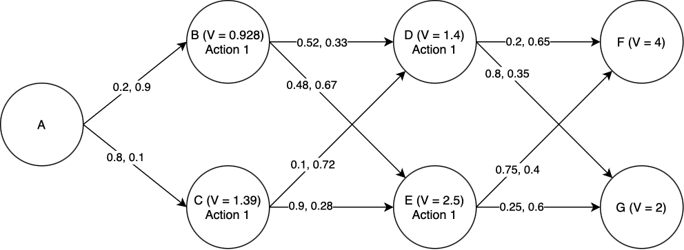
Finally, the same procedure lets us compute the optimal action at state a, and also \(V(A)\).
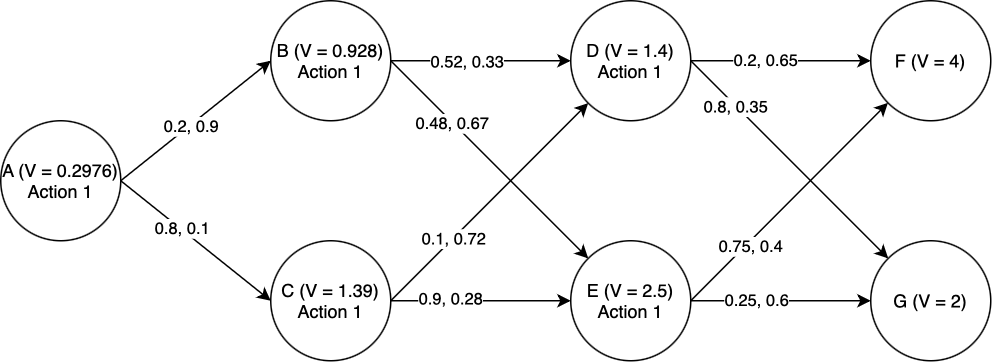
Thus we have computed the optimal actions to take from state A (or from any state onward) to the end.
Note that for this particular case, Action 1 was always the best action to take (turns out it’s hard to make up an example that you know in advance will give “interesting” results). But this highlights the power of dynamic programming: imagine how hard it would be to tell what the right action is in each state just by looking at the graph, and not going throught the stochastic dynamic programming process.
Infinite time horizon dynamic programming#
Often we are interested in problems with an infinite time horizon. For example, suppose we are designing a stabilization system for a cruise ship, to reduce rolling due to waves. The cruise ship will put out to sea, activate the stabilization system, and leave it running “indefinitely”, or at least until it gets back to port. Since we don’t know how long the stabilizer will have to run (and in any case it will run for a very long time on each journey), we can just assume it will run “forever”. In cases like these, infinite-horizon dynamic programming is useful.
In infinite-horizon dynamic programming, it no longer makes sense to consider a terminal state cost, since there is no terminal state. Instead, we use the infinite-horizon Bellman equation, which includes a “discount factor” \(\gamma\) multiplying \(V(x_{t+1}, t+1)\), where \(0 < \gamma < 1\):
It also does not make sense to keep track of timestep in the infinite horizon case since the horizon is, well, infinite. Keeping track of what the value is at timestep, say, 1000000 versus time step 100 is not particularly useful since the horizon is infinite. As such, drop the time argument in our value function definition.
Infinite-Horizon Bellman Equation (discrete time)
This has the effect of “discounting” future costs, so that they mattter less the further in the future they are. As we work backwards through time in the dynamic programming process, the value function at later time steps will be multiplied by higher and higher powers of \(\gamma\), which converge to zero.
But how do we use this? Since in the dynamic programming process we have to work backwards through time, it seems like the infinite-horizon problem is inherently intractable; we can’t compute infinitely many iterations. That’s where \(\gamma\) comes in. The inclusion of that discount factor, strictly between 0 and 1, means that the value function \(V(x, t)\) converges as you iterate through the DP process; that is, it asymptotically approaches a limiting value. Furthermore, we can pick an arbitrary “terminal state value” to start our DP iteration; the discount factor eliminates the influence of the terminal state value over time, and the limiting value of \(V(x)\) does not depend on the terminal state value we pick. So, we can simply pick an arbitrary initialization for \(V(x)\) and iterate until \(V(x)\) converges to within some chosen convergence tolerance \(\epsilon\).
Example: discrete-time, deterministic dynamics, discrete state and control, infinite-horizon.
Suppose we have a discrete-time system with two states, A and B. At each time step we can remain in the state we’re in, or transition to the other; each action has a certain cost. A graph representation of this system is shown below, at some imaginary “end of time” from which we initialize the DP process; you can imagine that the graph extends infinitely to the left. The graph edges represent the possible state transitions from one time step to the next, and are lebeled with their costs. We seek to find the optimal action in each state to minimize the total cost until the end of time, using the infinite-horizon Bellman equation. We arbitrarily assign \(V(A) = V(B) = 0\) at the “end of time”, and in this case we will consider a discount factor of \(\gamma = 0.9\).
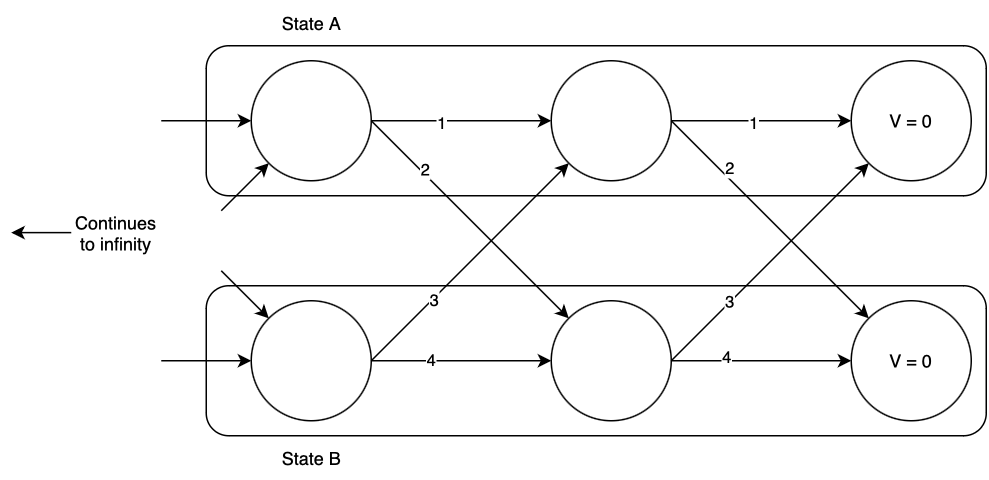
Now we begin the dynamic programming process. Consider state A, one time step back from the “end of time”. What is the optimal action, and value of \(V(A)\)? If we remain in state A, we will incur a total cost of \(1 + 0.9\times 0 = 1\), and if we transition to state B, we will incur a total cost of \(2 + 0.9\times 0 = 2\). Of the two, remaining in state A has the lower cost, so that is the optimal action, and at this time step \(V(A) = 1)\). Now consider state B: if we remain in state B, we will incur a total cost of \(4 + 0.9\times 0 = 4\), and if we transition to state A we will incur a total cost of \(3+0.9\times 0 = 3\). Thus we should transition to state A, and at this time step \(V(B) = 3\). The optimal transitions are highlighted below.
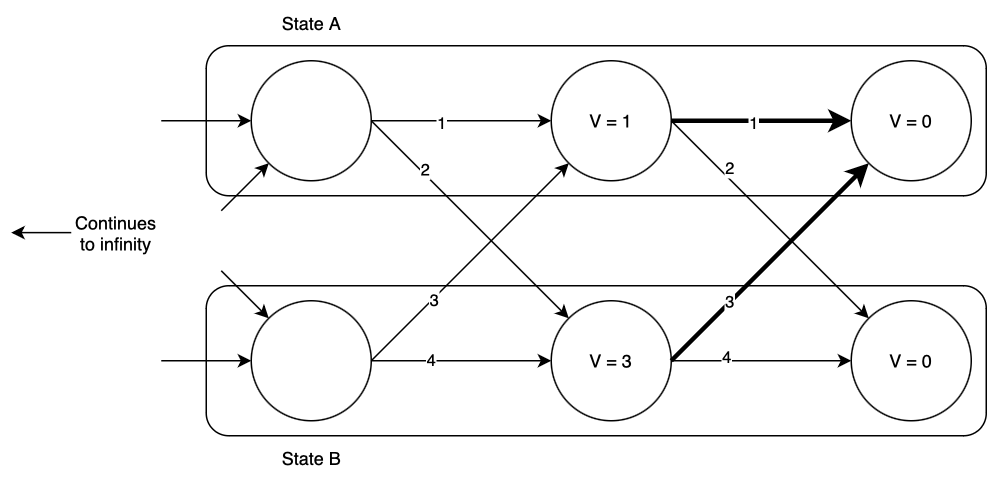
Now we move one time step back and repeat the process, finding again that the optimal action is to remain in state A if you’re already there, or to transition to state A if you’re in state B. The optimal values of \(V(x, t)\) and optimal actions are shown below.
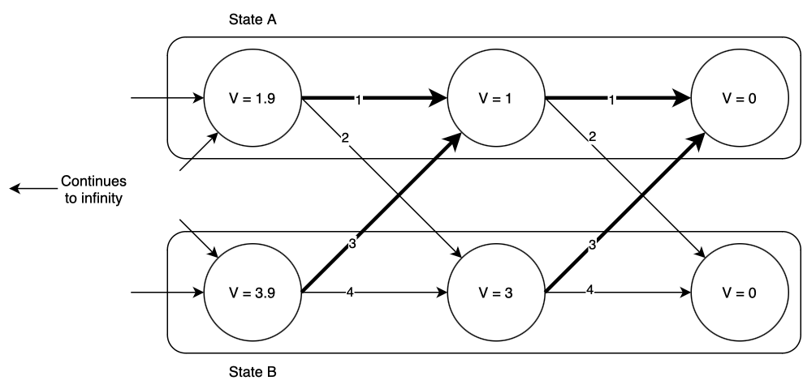
Notice that as we go backward in time, \(V(x)\) increases; however, it appears to be slowing down. Going one time step back from the end of time, \(V(x)\) increased by more than it did when we went one step further. This pattern will continue until eventually \(V(x)\) converges. In this case, the values that \(V(x)\) converges to are \(V(A) = 10, V(B) = 12\). (Try this yourself! Write some code to iteratively compute these values. Also try different initializations of \(V(x)\) other than zero; does it make a difference?)
Hamilton-Jacobi-Bellman equation#
So far, we have considered a discrete-time setting. What about the continuous-time setting? We can derive the continuous-time case by casting the continuous time problem into a discrete-time problem with timestep \(\Delta t\) and let \(\Delta t\rightarrow 0\) and see what we get as a result of taking that limit. With the continuous-time setting, our dynamics are \(\dot{x} = f(x,u,t)\) and the cost is \(\int_0^T J(x,u,t) dt + J_T(x(T))\). Note that the cost is an integral, but to “convert to discrete-time”, the cost over a \(\Delta t\) time step is approximated to be \(J(x,u,t) \Delta t\).
Considering we are at timestep \(t\) and we consider a timestep size of \(\Delta t\), the Bellman equation can be written as,
Now we rearrange the terms and take the limit \(\Delta t\rightarrow 0\).
The resulting expression is a partial differential equation where the solution is the value function. We have \(V(x,T) = J_T(x)\) as a boundary condition, and we must solve the PDE backward in time to get the value function over all entire time horizon.
Hamilton-Jacobi-Bellman Equation (continuous-time, finite horizon)
Additional reading#
Chapter 4: Reinforcement Learning: An Introduction (2nd Ed) by Richard S. Sutton and Andrew Barto
Chapter 7: Underactuated Robotics Course Notes by Russ Tedrake
Dynamic Programming and Optimal Control by Dimitri P. Bertsekas (No free online version, but there are some online videos available.)